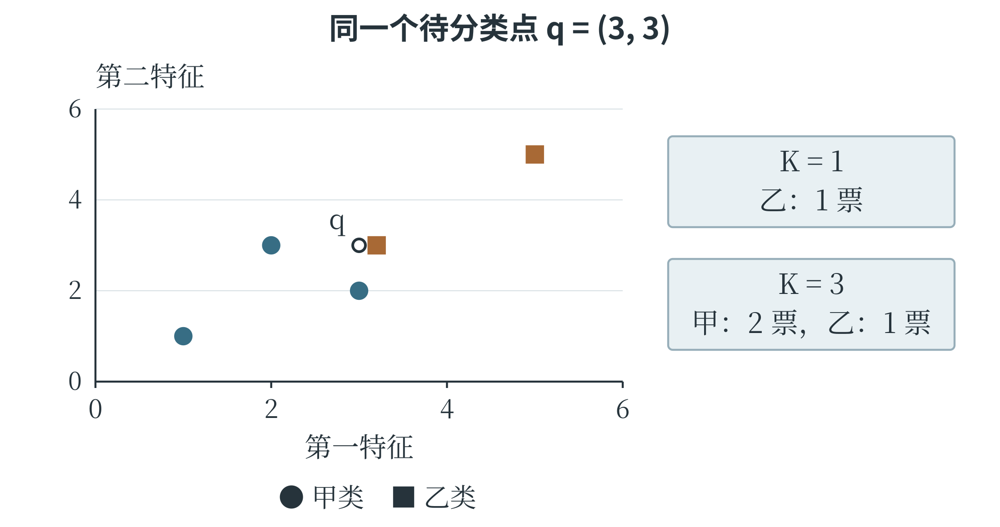
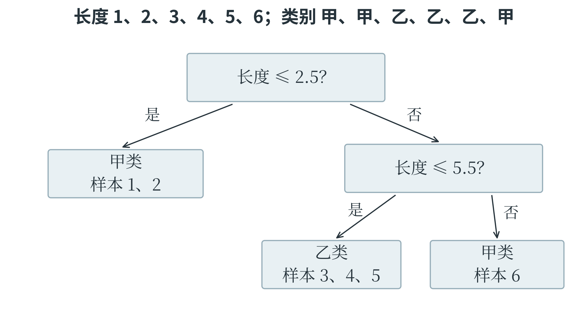
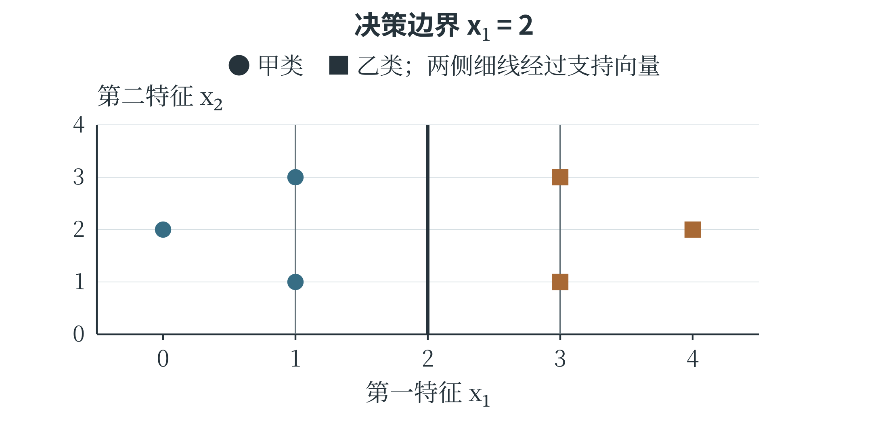

6.2 常见分类算法
先形成分数，再决定类别
分类模型最终要输出类别，但内部可以先计算一个或多个分数。把输入变成分类分数的函数，常称为决策函数。例如，\(g(x_1,x_2)=2x_1-x_2-1\)，规定 \(g\geq0\) 时判为甲类，否则判为乙类。输入 \((2,1)\) 时，分数为 2，输出甲类；输入 \((0,1)\) 时，分数为 \(-2\)，输出乙类。两类之间满足 \(g=0\) 的位置构成决策边界。在这个二维例子中，它是一条直线。边界两侧用不同类别表示，分数大小与类别判定因此相关，但分数本身不是概率。
损失函数和决策函数的用途不同：前者评价预测与目标的差距，帮助训练；后者利用输入给出分类依据。不同模型可以用不同方式构成边界。
K 近邻参考周围的样本
K 近邻算法，简称 KNN，对一个新样本先计算它到训练样本的距离，找出最近的 \(K\) 个，再由这些邻居决定结果。用于分类时，最简单的办法是让邻居按标签投票；用于回归时，则可以对邻居目标值取平均。字母 \(K\) 指采用多少个邻居，是需要选择的超参数。例如，二维特征空间中有三个训练样本：甲类 \((1,1)\)、甲类 \((2,1)\)、乙类 \((4,4)\)。新样本为 \((2,2)\)，它到三点的距离分别为 \(\sqrt{2}\)、1、\(\sqrt{8}\)。取 \(K=1\)，最近邻为 \((2,1)\)，判为甲类；取 \(K=3\)，三票中甲类有两票，仍判为甲类。若再增加不同位置的训练点，或改变 \(K\)，结果就可能变化。
KNN 把训练样本保留下来供预测时参考，通常不需要先拟合一条显式直线。它的边界由样本位置、距离规则和邻居数共同决定。
\(K\) 太小，判断容易受个别异常点影响；\(K\) 太大，则可能让较远的大类别盖过近处的局部规律。距离还受特征尺度影响，长度和编号随意混在一起就可能误导邻居选择。
出现票数相同时，需要使用事先确定的规则，不能假定每次一定有唯一多数。
邻居数改变时，判断怎样变化
取待判断点 \(q=(3,3)\)。附近有一个乙类点 \((3.2,3)\)，距离仅为 0.2；另有两个甲类点 \((2,3)\)、\((3,2)\)，距离都是 1。更远处还有甲类 \((1,1)\) 和乙类 \((5,5)\)。取一个最近邻，q 被判为乙类；取三个最近邻，两票甲、一票乙，q 被判为甲类。图 6-3 标出样本位置，并列出两次判断的票数。

最近的乙类点可能是真实的局部结构，也可能是一条少见记录。仅凭这张图，不能断言哪一个 K 一定更好；需要在代表实际使用条件的验证资料上比较。下面用普通 Python 列表实现这个例子的分类。距离只用于排序，因此可以直接比较距离的平方，省去开平方；对非负数，平方根保持大小顺序。程序把每条距离与标签配成元组，排序后取前 K 项，再统计票数。
training = [(3.2, 3.0, "乙"), (2.0, 3.0, "甲"),
(3.0, 2.0, "甲"), (1.0, 1.0, "甲"),
(5.0, 5.0, "乙")]
def neighbor_vote(point, k):
distances = []
for x1, x2, label in training:
d2 = (point[0] - x1) ** 2
d2 += (point[1] - x2) ** 2
distances.append((d2, label))
distances.sort(key=lambda item: item[0])
counts = {}
for d2, label in distances[:k]:
counts[label] = counts.get(label, 0) + 1
return max(counts, key=counts.get)
print(neighbor_vote((3.0, 3.0), 1)) # 乙
print(neighbor_vote((3.0, 3.0), 3)) # 甲
本例约定 K 为 1 到训练样本数之间的整数。票数相同的类别在这里按最早进入计数字典的先后决定，也就是优先采用已选邻居中更早出现的类别；这个例子的两次调用都没有出现平票。程序给出了明确的执行规则，但实际工具可以采用不同规则。理解算法时，需要把距离、邻居选择、投票和并列处理分别看清楚。
决策树把判断组织成分支
决策树用一连串条件把样本逐步分开。根结点给出第一次判断，分支指向不同结果，内部结点继续判断，叶结点给出预测类别或类别分布。例如，先问叶长是否小于 5 厘米，再在其中一侧按叶宽划分，每条从根到叶的路径就是一组同时满足的条件。预测时只需沿条件走到相应叶结点。树的结构可以从训练数据中学习。设按长度排序的六个样本，前三个标签为甲、后三个为乙，在第三与第四个长度之间设阈值，就能把两类完全分开。若一次划分后各组仍混有许多类别，则区分能力较弱。训练算法会比较候选特征和阈值，选择能让子组更集中于某些类别的划分。
衡量混杂程度的一种方法是基尼不纯度。若一个结点中各类占比分别为 \(p_1,p_2,\ldots\)，其值为 \(1-\sum_jp_j^2\)。两类各一半时为 \(1-0.5^2-0.5^2=0.5\)；全为同一类时为零。比较划分时，要按子结点样本数加权，不能让只有一个样本的小组与几十个样本的大组拥有同等影响。另一种常用指标叫信息熵，同样用于反映类别混杂程度。
树可以继续分支，直到叶结点足够纯，或者达到最大深度、最少样本数等限制。分得太细，甚至为个别错误标签专设分支，训练准确率可能很高，面对新样本却未必可靠。限制最大深度或增加叶结点最少样本数，就是控制复杂度的常见办法。
一次树划分怎样比较好坏
设六个样本的长度依次为 1、2、3、4、5、6，标签依次为甲、甲、乙、乙、乙、甲。划分前两类各占一半，基尼不纯度为 0.5。先试着在 2 与 3 之间划分：左边两条都是甲，不纯度为 0；右边四条中三乙一甲，不纯度为 \(1-(3/4)^2-(1/4)^2=3/8\)。按样本数加权后为：
再试着在 3 与 4 之间划分：左边两甲一乙，右边一甲两乙，每边的不纯度都是 \(1-(2/3)^2-(1/3)^2=4/9\)，加权后仍为 \(4/9\)。两种候选都让混杂程度有所下降，但第一种下降更多，因此在这两种方案中优先选择第一种。这里比较的是划分后的整体混杂程度，小组与大组按样本数分配权重。

第一种划分右侧仍有甲乙混合，可以继续在 5 与 6 之间设阈值。这样得到三个叶结点：长度不大于 2.5 时判甲；长度大于 2.5、且不大于 5.5 时判乙；长度大于 5.5 时判甲。新样本长度为 4.2，会先走右分支，再走左分支，落到乙类叶结点。训练时要比较许多候选划分，预测时则只沿一条路径走，这两种工作量也不同。若某个叶结点里仍有多类样本，可以按多数类别输出，也可以保留各类别比例。例如，两甲一乙的叶结点，可以输出甲类，并把 \(2/3\) 作为该叶结点内的甲类比例。这个比例依赖到达此处的训练样本；样本很少时，比例也可能不稳定。增加叶结点所需的最少样本数，就是避免树仅凭极少数记录作过细区分的一种方式。
支持向量机寻找有间隔的边界
支持向量机，简称 SVM，在一种基本的二分类情形中，寻找能够分开两类、并使两侧最近样本到边界的间隔尽量大的边界。二维中的线性边界是一条直线，三维中是平面，更高维中常称为超平面。靠近边界、对边界位置起关键作用的样本称为支持向量。两条直线都能把训练样本分开时，其中一条若紧贴某几个样本，轻微测量变化就可能把它们推到另一侧；另一条留出较大间隔，通常更有余地。这是最大间隔思想的直观出发点。真实数据常有重叠和噪声，SVM 可以允许部分样本进入间隔甚至被误分，同时惩罚这些违反要求的情况，称为软间隔。
常见超参数 \(C\) 调节违反间隔要求的惩罚强度。其他条件相同时，较大的 \(C\) 更强调减少这些违反情况，较小的 \(C\) 更容许一定误差来换取较宽松的边界。它并不是越大越好，仍应根据验证结果选择。非线性 SVM 可以使用核函数，以计算相似性的方式表达更复杂的特征关系，使原始空间中的边界能够弯曲；核函数不是标签规则，也不是卷积核。
KNN 参考邻居，决策树逐条判断，SVM 比较边界与间隔。它们都能完成分类，却具有不同的假设和计算特点。模型选择需要结合数据规模、特征表示、是否需要解释以及验证表现，不能仅凭名称新旧决定。
把间隔画出来
设甲类训练点位于 \((1,1)\)、\((1,3)\)，乙类训练点位于 \((3,1)\)、\((3,3)\)。直线 \(x_1=1.5\) 能把两类分开，但离左侧甲类只有 0.5；直线 \(x_1=2\) 到两侧最近点的距离都为 1。最大间隔的想法，就是在能够正确区分的边界中，尽量扩大最近样本留出的空间。

图 6-5 的中间线是决策边界，左右两条平行线经过最近样本，表示间隔边缘。在这个对称例子中，四个点都限制了可留出的空间；若再加入位于 \((0,2)\) 的甲类点和 \((4,2)\) 的乙类点，它们离边界更远，不会要求把边界挪开。支持向量中的“支持”，便可以理解为这些关键样本对边界位置的约束作用。
若在右侧出现一个甲类点，所有点可能无法再被一条直线完全分开。软间隔允许适当违反间隔要求，同时把这些违反计入训练目标。是否为了一个异常点大幅弯曲或移动边界，需要与整体拟合和复杂度一并考虑。